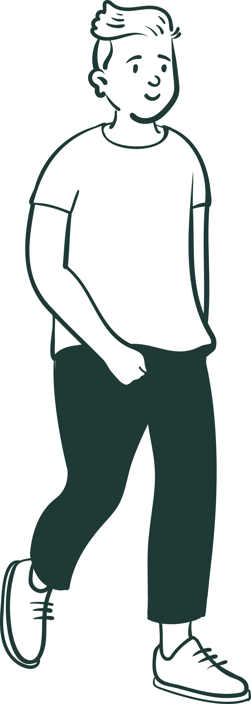
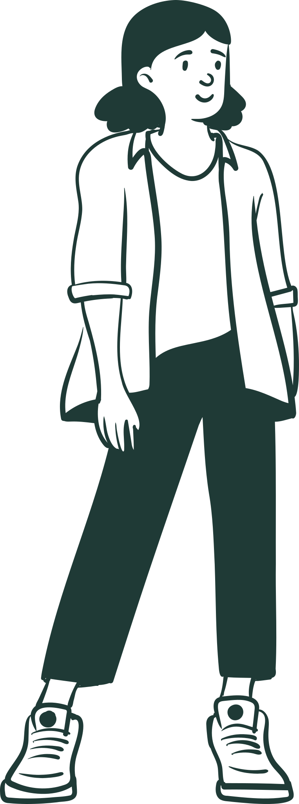
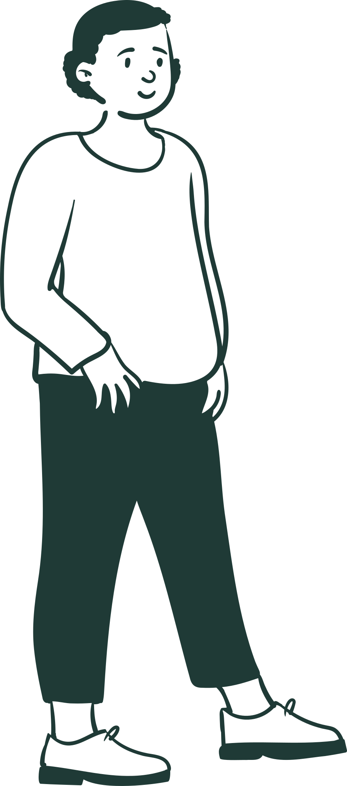
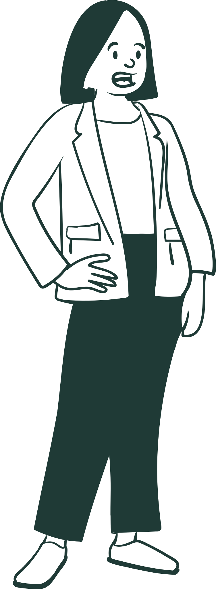
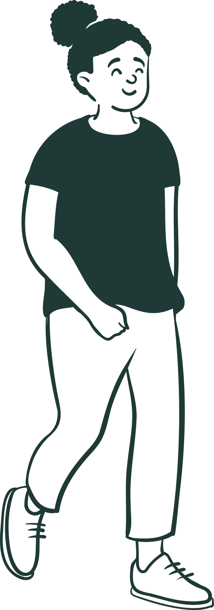

Antes de chegar às empresas, nossa história começou em um hospital.
há quase 20 anos…

@fairhealth.br
Arraste para o lado →
No hospital
Dentro de um hospital, surgiu o Escritório do Paciente.
Um modelo de cuidado criado para trazer o paciente de volta ao centro, com a escuta, o acolhimento e as necessidades de cada pessoa em primeiro lugar.
2009
onde tudo começou
@fairhealth.br
02 / 07
A essência
Por trás de cada atendimento, existe uma pessoa.
a sua história
seus hábitos
suas necessidades
suas prioridades
Por isso, escutar sempre foi parte essencial da nossa maneira de cuidar.

@fairhealth.br
03 / 07
O acolhimento
Antes de qualquer exame, uma conversa.
Um espaço seguro e confidencial para contar a própria história e decidir junto o próprio cuidado.
O que é importante para você?
sem pressa e sem julgamento


@fairhealth.br
04 / 07
Evolução
Com o tempo, essa forma de cuidar evoluiu.
E o conceito chegou a um lugar que faz parte da rotina das pessoas: o trabalho. Porque, quando o cuidado está perto, ele acontece.
o trabalho!

@fairhealth.br
05 / 07
Hoje · Nas empresas
Assim surgiu o Escritório do Cuidado, da fairhealth.
Um projeto novo, inspirado no Escritório do Paciente e pensado para as empresas: um espaço de acolhimento e de medicina preventiva, com cuidado individualizado e acompanhamento.
hoje
dentro da empresa
@fairhealth.br
06 / 07
O propósito
Os lugares mudaram. A essência do cuidado permanece.
Do hospital às empresas, seguimos com um mesmo princípio: o cuidado começa pela pessoa.